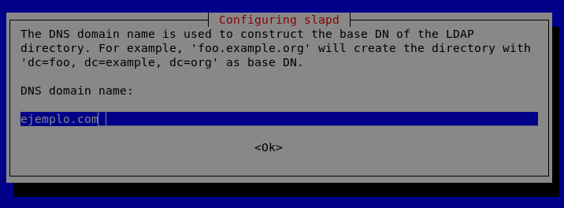
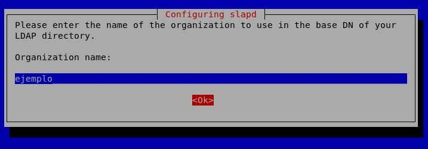
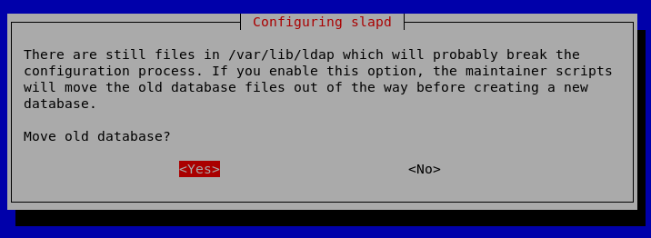
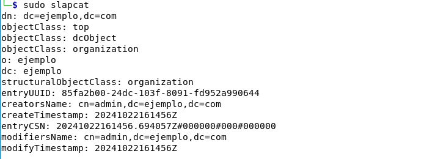

Instalación y Configuración de OpenLDAP
Introducción
La instalación que se va a llevar a cabo es del servidor OpenLDAP, llamado slapd, y sus utilidades, que actúan como servicio DNS para sistemas operativos Linux bajo la versión de Debian, específicamente Kali Linux. La instalación se puede realizar en una máquina virtual que tenga una imagen de este sistema operativo o en una máquina física.
Paso 1: Instalación del Servidor
Para empezar, es necesario tener conexión a Internet y haber actualizado los repositorios de la máquina virtual o física donde se instalará el servicio de directorio LDAP, además de asignar una dirección IP fija para evitar problemas de conexión más adelante. Una vez que se han realizado todas estas acciones (comentadas en el servicio de DNS) se puede ejecutar la siguiente sentencia:
# sudo apt install slapd ldap-utils
El servicio solicitará una contraseña de administrador; se escribirá 'admin' dos veces (la segunda para confirmación), aunque se puede elegir otra si se desea.
Paso 2: Configuración de slapd
A continuación, se configurará slapd con el siguiente comando. Se verá la ventana de configuración siguiente, donde se dejará seleccionada la opción por defecto (No):
# sudo dpkg-reconfigure slapd
2.1. Nombre del dominio DNS
Cuando se pulse esta opción, aparecerá otra pantalla donde habrá que escribir el dominio que será necesario instalar en el servicio de directorio, en nuestro caso ejemplo.com.
2.2. Nombre de la organización
Después, se ingresará el nombre de la organización, que será ejemplo, siguiendo la nomenclatura anterior.
2.3. Contraseña de administrador
El siguiente paso es ingresar nuevamente la contraseña de administrador dos veces, que en nuestro caso sería 'admin'.
2.4. Purgar la base de datos
Por último, la configuración preguntará si se desea purgar la base de datos; la respuesta más adecuada es que SÍ.
2.5. Mover base de datos anterior
Luego, preguntará si se desea mover la base de datos de LDAP anterior; la respuesta es SÍ.
Gestión del Servicio LDAP
Ya se tiene instalado el servicio de directorio LDAP, por lo que lo único que nos queda es iniciar y detener el servicio. Esto se realiza con los siguientes comandos:
# sudo service slapd start
# sudo service slapd stop
Una vez que levantamos el servicio, el servidor LDAP estará escuchando por el puerto 389 de TCP y UDP. Para conexiones seguras mediante SSL, se utilizará el puerto 636.
Otros comandos de gestión
Otros comandos que nos permiten gestionar LDAP son los siguientes:
# service slapd reload→ permite recargar la configuración del servicio sin reiniciarlo.# service slapd restart→ reinicia el servicio.# service slapd force-reload→ fuerza la recarga de la configuración del servicio.# service slapd status→ comprueba si el servicio está activo o inactivo.
Paso 3: Herramientas del Servidor LDAP
Se van a detallar algunas herramientas del servidor LDAP. Para mostrar la información que tenemos, se debe teclear el siguiente comando:
# sudo slapcat
Y mostrará una salida, teniendo en cuenta nuestro dominio ejemplo.com, como la siguiente:
Otras herramientas del servidor
- #slapdd: permite insertar entradas desde un fichero LDIF.
- #slapindex: regenera los índices.
- #slappasswd: sirve para obtener una contraseña encriptada.
Comandos de Cliente LDAP
Por último, veremos algunos comandos para agregar información al servicio de directorio LDAP desde el punto de vista del cliente, como son los siguientes:
ldapsearch
Para seleccionar los objetos de un directorio a partir de cierta raíz del árbol de directorio. Un ejemplo de sentencia sería la siguiente (buscaría todos los objetos dentro de nuestro dominio ejemplo.com):
# ldapsearch -x -D "cn=admin,dc=ejemplo,dc=com" -w admin -b "dc=ejemplo,dc=com" "(objectclass=*)"
ldapmodify
Para modificar los objetos de un directorio a partir de cierta raíz del servicio de directorio. Un ejemplo sería:
# sudo ldapmodify -D cn=admin,dc=ejemplo,dc=com -w admin -f Modify.ldif -c
La línea anterior permite conectarnos como administrador (admin) a nuestro dominio ejemplo.com y modificar en el servicio de directorio la información contenida en el fichero Modify.ldif. La opción -c permite reportar los errores.
ldapadd
Para añadir objetos a nuestro servicio de directorio.
# sudo ldapadd -D cn=admin,dc=ejemplo,dc=com -w admin -f Add.ldif -c
La línea anterior permite conectarnos como administrador (admin) a nuestro dominio ejemplo.com e introducir en el servicio de directorio el fichero Add.ldif. La opción -c permite reportar los errores.
ldapdelete
Para borrar entradas de nuestro servicio de directorio.
# sudo ldapdelete -D "cn=root,dc=ejemplo,dc=com" cn=Juan Muñoz, ou=usuarios, dc=ejemplo,dc=com